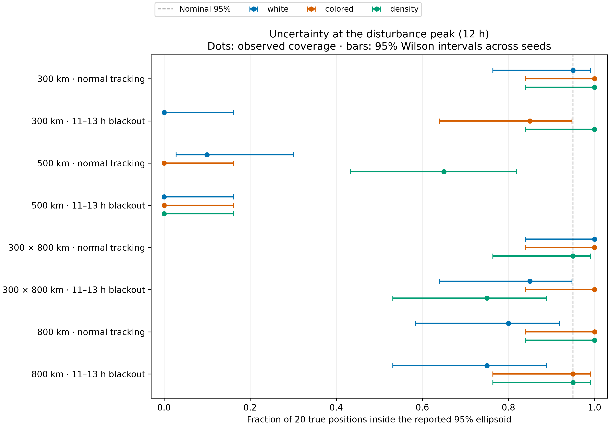
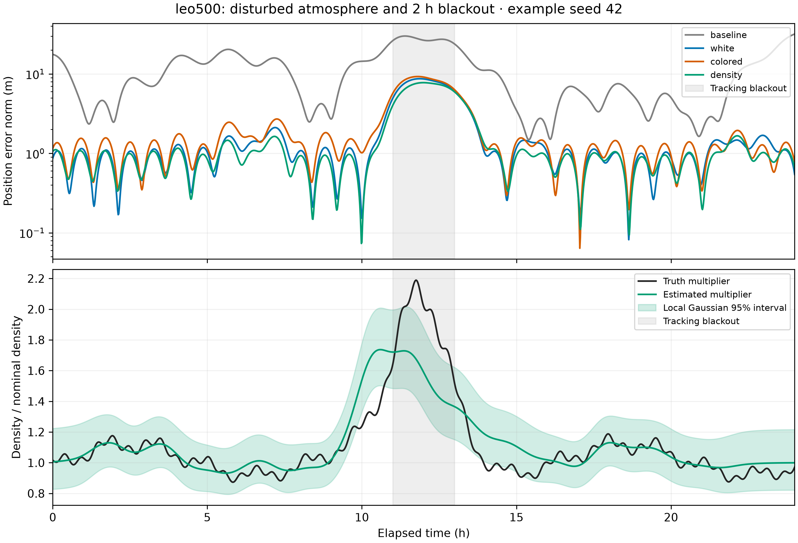
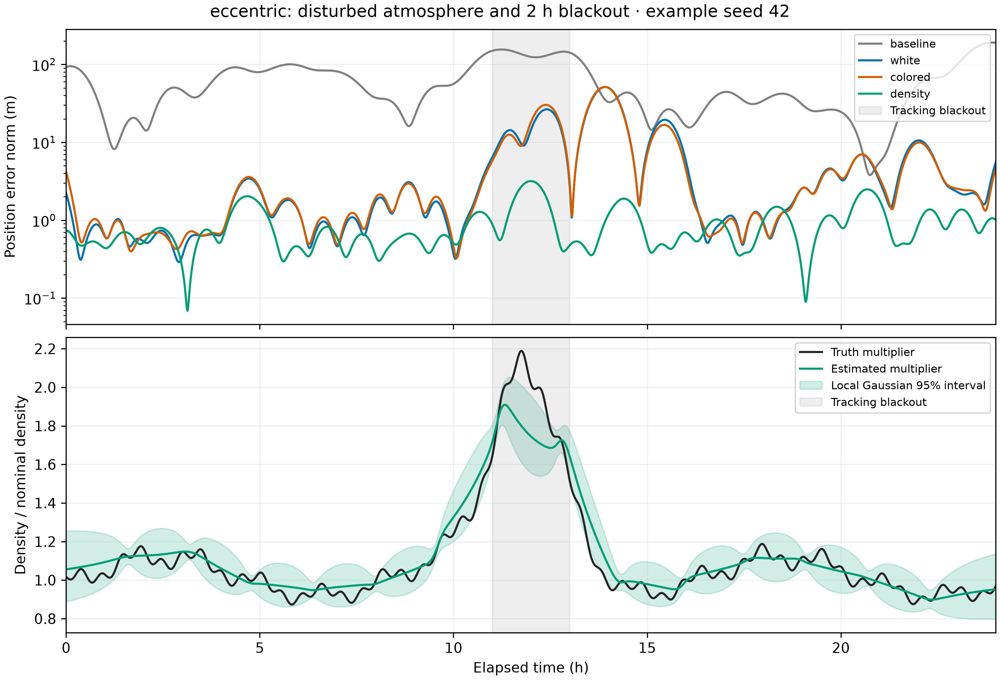

A critical result: 0 of 20 covered
At the 12-hour disturbance peak in the 500 km orbit with an 11–13 h tracking blackout, nominal 95% position ellipsoids contained 0 of 20 true positions for every stochastic model. The density model covered 13 of 20 at the same epoch with normal tracking.
Whole-trajectory averages hide this failure: the density model averaged 95.7% position coverage with normal tracking and 84.6% with the blackout. Solver agreement and successful reconstruction do not establish trustworthy uncertainty. Coverage must be inspected at fixed epochs across independent seeds.

Where the atmospheric model helped
A time-varying log-density correction improved reconstruction where drag mattered, especially on the eccentric orbit. At 800 km it offered essentially no trajectory advantage over correlated acceleration. These are retrospective estimates using the full observation arc, including observations after a gap.
| Orbit | Tracking | White acceleration | Colored acceleration | Log density |
|---|---|---|---|---|
| 300 km | Normal | 9.28 | 6.26 | 5.47 |
| 300 km | Blackout | 28.72 | 13.32 | 9.49 |
| 500 km | Normal | 1.27 | 1.39 | 1.07 |
| 500 km | Blackout | 2.39 | 2.57 | 2.09 |
| 300 × 800 km | Normal | 4.97 | 4.83 | 1.13 |
| 300 × 800 km | Blackout | 7.79 | 8.08 | 1.21 |
| 800 km | Normal | 0.73 | 0.65 | 0.65 |
| 800 km | Blackout | 0.76 | 0.69 | 0.69 |
The constant-drag deterministic baseline, velocity errors, errors inside the gap, and paired-seed comparisons are included in the full report. Small differences are not automatically practically meaningful.
With quiet atmosphere and normal tracking, density/colored RMSE was 5.41/5.98 m at 300 km, 0.94/0.97 m at 500 km, and 1.09/3.26 m on the eccentric orbit. All stochastic models were close at 800 km. The quiet atmosphere still contains smooth multiscale variation.






Orbit accuracy is not density recovery
At 800 km, the mean true log-density correction at the disturbance peak was 0.683. Its estimated mean was only 0.00385, with posterior standard deviation 0.09993—almost unchanged from the 0.1 prior.
The orbit was reconstructed to about 0.65 m, but the atmosphere remained weakly observed. Selecting hyperparameters by tracking prediction alone does not guarantee calibrated uncertainty for an unobserved density signal.
Bayesian posterior checks
RUNNING · NOT YET A REFERENCE
The first short-arc NumPyro check reached its 30-minute limit without completing; four checks remain running. No posterior reference is established. A sampled posterior becomes a reference only after four chains meet R-hat <1.01, effective sample size ≥400, and zero unresolved divergences.
Pending or failed diagnostics do not validate the local Gaussian approximation. They also cannot fix a misspecified disturbance prior. This status is a saved report snapshot, not a live monitor.
A fairer comparison required broader tuning
Independent six-hour calibration exposed truncated acceleration-noise grids. Expanding both acceleration amplitude grids before final evaluation changed eccentric-orbit predictive negative log likelihood from 44.07 to 0.904 for white acceleration and 2.355 to 0.913 for colored acceleration; density scored 0.881. The early comparison overstated the gap.
V2 attempted 740 calibration fits. Four candidate fits did not qualify; every selected candidate had five valid calibration seeds. No selected amplitude remained at an improving upper endpoint. Evaluation used separate seeds and frozen selections. This checks the declared grids; it does not establish globally optimal hyperparameters.
Calibration selections, boundary checks, and predictive scores
Sparse inference and trajectory boundaries
GTSAM and an independent iterated Kalman/RTS smoother agreed in all 96 required comparisons: state differences below 1% of marginal posterior standard deviations, relative objective differences below 10−4, and identical frozen process-covariance references. The observed maxima were 0.000665 posterior standard deviations and 3.49 × 10−7 relative objective difference.
For 6-, 12-, and 24-hour arcs, retaining uncertain boundary states in a Gaussian separator calculation reproduced the full linearized solution:
| Arc | Nodes | Max position difference | Relative linear objective difference |
|---|---|---|---|
| 6 h | 361 | 6.80 × 10−9 m | 5.37 × 10−16 |
| 12 h | 721 | 5.41 × 10−9 m | 1.34 × 10−16 |
| 24 h | 1,441 | 3.03 × 10−9 m | 0 at reported precision |
These measurements establish numerical agreement. They do not establish a speedup or a general runtime scaling law. Scaling record · 24 h separator details
Separate fresh-process profiles of these same fits used 273.0, 278.3, and 286.2 MiB peak RSS for 6, 12, and 24 hours, respectively. Process wall times were 4.59, 5.36, and 6.06 seconds on cpu-gpu-server-b, using two CPU cores and one BLAS thread. Memory includes Python/JAX overhead; these are single observations, not asymptotic scaling evidence. Resource measurements and reproduction details
CPU versus GPU: measure the actual workload
For one actual two-hour, 121-node JAX float64 posterior-gradient workload, synchronized median evaluation time was 13.9 ms on CPU versus 409 ms on an RTX 6000 Ada GPU. CPU was about 29.5× faster for this sequential small-state calculation. Compilation was excluded; each platform had five timed evaluations on a shared host. This is a gradient microbenchmark, not a complete NUTS speed comparison.
Hardware, affinity, timing protocol, and limits · CPU timings · GPU timings
What the realistic stress case showed
One 500 km case changed gravity, third-body forces, solar radiation pressure, and the atmosphere together, using NRLMSISE-00 and archived space weather. With the controlled-calibration parameters frozen, position RMSE was 731 m for the baseline, 369 m for white acceleration, and 467 m for colored acceleration. The density fit did not converge and is not a valid competing result.
This single deliberately mismatched case demonstrates a limit of the current estimator. It is not an ensemble validation, and it cannot isolate which omitted force caused the error. Stress result record · Truth provenance and weather archive metadata · Nonconvergence diagnosis
Limits and the next experiment
- The main campaign uses independent Tudat simulation with controlled synthetic physics, ideal geometric range/range-rate, fixed spacecraft properties, and prescribed stations. It is not a flight-data validation.
- Local Gaussian covariance and a fixed process-noise reference are approximations. An atmosphere correction cannot generally be separated from an unknown drag coefficient or attitude without additional information.
- Twenty seeds give coarse fixed-epoch coverage estimates. Paired bootstrap intervals are descriptive, with no multiple-comparison correction; time samples are not independent Monte Carlo trials.
- Calibration uses six-hour arcs and held-out individual observations. A useful next step is tuning and testing on held-out tracking gaps and broader disturbance families, then inspecting coverage at the hardest epochs.
Inspect and reproduce
- Full diagnostic reportEvery fit, paired comparisons, fixed-epoch coverage, and provenance.
- Combined campaign manifest1,280 primary fits and 96 solver-equivalence checks.
- Group summary CSVMachine-readable aggregate results.
- Measurement residual summaryRegenerate residual arrays · Derived-artifact manifest
- README and reproduction commandsEnvironment installation, scientific model, and acceptance rules.
- Walkthrough notebookSimulation, fitting, plotting, and solver consistency.
- Executed walkthroughAll six code cells executed successfully. Execution record
- 49 passing testsIndependent propagation checks · Solver validation